Case Study
Design System /
Parliament Digital Service
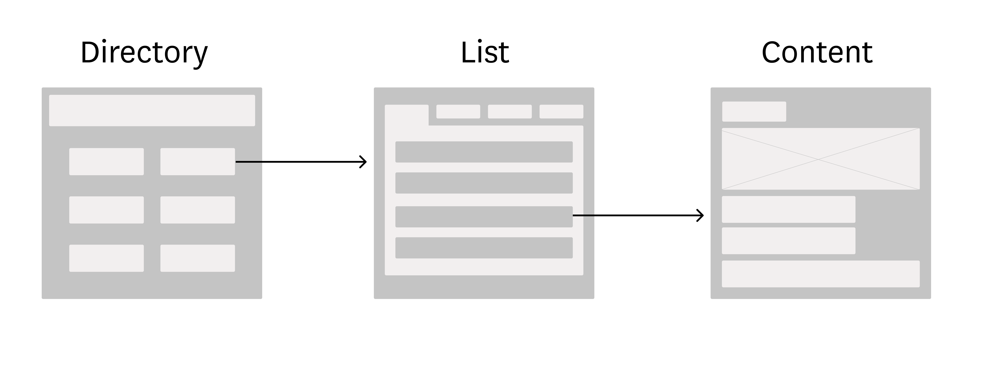
Ambition
Parliament should be open to everyone. Currently there is a huge amount of great content on the UK Parliament estate, but accessing it is a poor user experience. Lack of previous digital guidance has led to a library of widely varying microsites. We need to fix this.
Headline
- My design system solutions should help provide one clear mental model of how to access all content within Parliament.
Problem
There are currently over 51 Parliament microsites, each with their own styles, patterns and components
Parliament has a huge amount of individual sites across it’s product/service estate. The current known number is 51. With no official guidance, this has led to some completely different functioning and looking sites.
There is a huge amount of data at Parliament, it is democratically important and high quality - with the potential to impact everyone in one way or another.
Previously teams have tried their best to surface this data however the majority of sites have not followed user centered design principals or had design help.
This has led to some of the examples seen below.
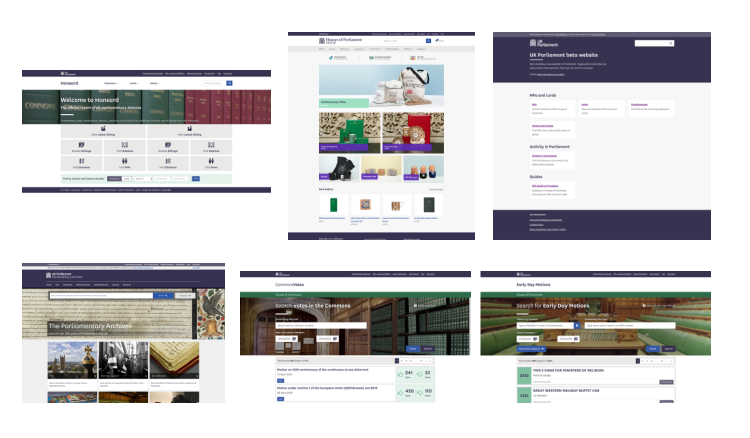The cognitive load on the user is huge when they have to re-learn a new site every time they want to access varying types of data or content.
There is a lot of great data, but it is tedious to access.
Doing internal research I discovered one previous team had loosely started grouping page types to help keep their pages consistent in structure.
The three page types were:
- Utilities
- Lists
- Things
With some work, I thought this concept could be applied to the new UK Parliament design system.
Hypothesis
The words ‘Utilities’ and ‘Things’ are ambiguous
I took the concepts and asked team mates from all disciplines what they understood by the words ‘Utilities’ and ‘Things’.
This small piece of ad-hoc research led me to understand that people have large variations in what these words mean. These concepts need to be communicated clearly within a design system so they needed to be iterated.
I devised definitions for each of the groupings I could find.
Thing - ‘The differentiated information/content/data that a user can consume.’
List - ‘Grouping of similar yet different content items.’
Utility - ‘Grouping of different types of lists.’
With these new definitions I could then propose appropriate names that could be easily communicated to the wider Parliament Digital Service.
My proposals were
Thing → Content
List → List
Utility → Directory
I then asked a different set of people what they understood from these names, it seemed clear that people understood content was pieces of information, lists were lists of content and directories were how you got to the lists.
Problem
Current list pages vary wildly
I noticed pages of lists of content being implemented in a huge range of different ways. Some were considering this their homepage, adding graphics and ‘visual flair’ and almost all had some type of filtering, but with no consistent pattern leading to a poor user experience.
Method
Product audit
Conducting an audit of the sites, I categorised the estate into the new groupings and then considered how each list page was filtering the content.
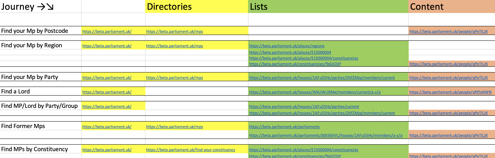I found many sites were prioritising search front and centre, implying the user knows exactly what they are looking for when entering the site. Previous research told me users often don’t know exact search terms, for example when trying to find their MP or look up the Ayes or Noes total for a vote.
Solution
Hypothesis
Currently, to find an MP a user has to decide how they want to find that MP before they may have even decided to find an MP. This has led to different journeys to get to the same content, as highlighted below in red.
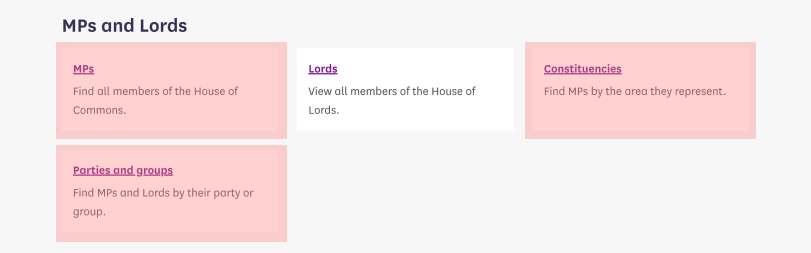I suggested the following pattern for grouping content.
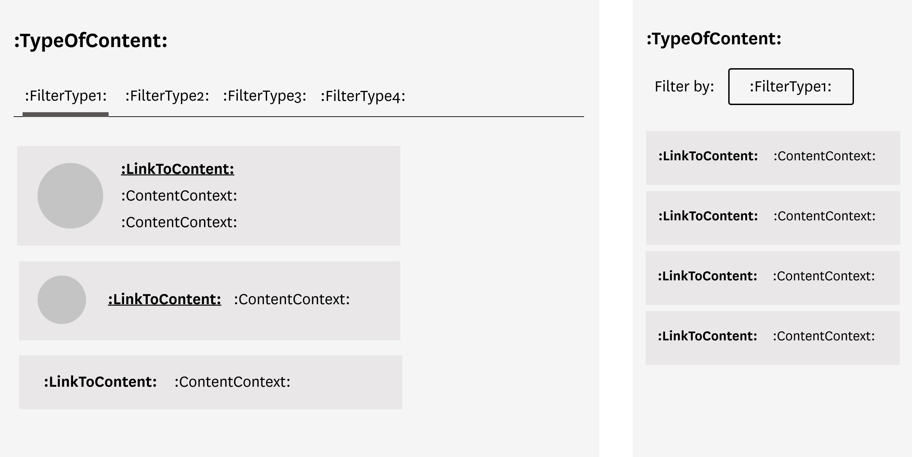One of the benefits of my solution is that content can be grouped on the basis of a user need.
For example, all a user has to know is that they want to find an MP - they can then decide how they wish to do that based on the filtering options.
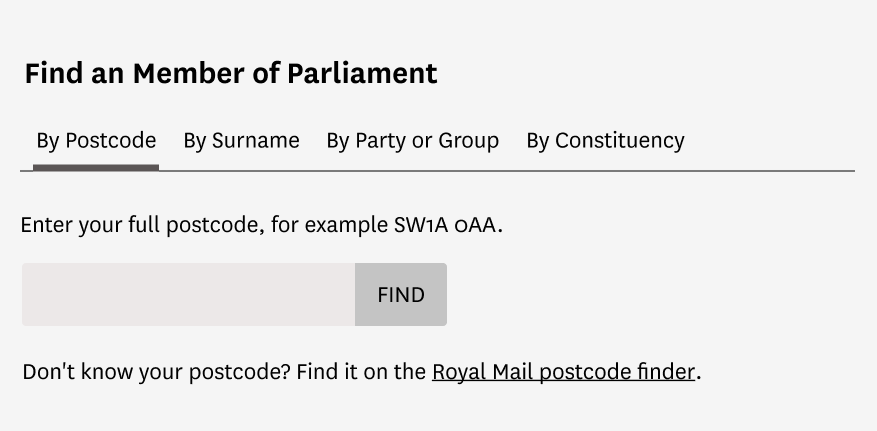 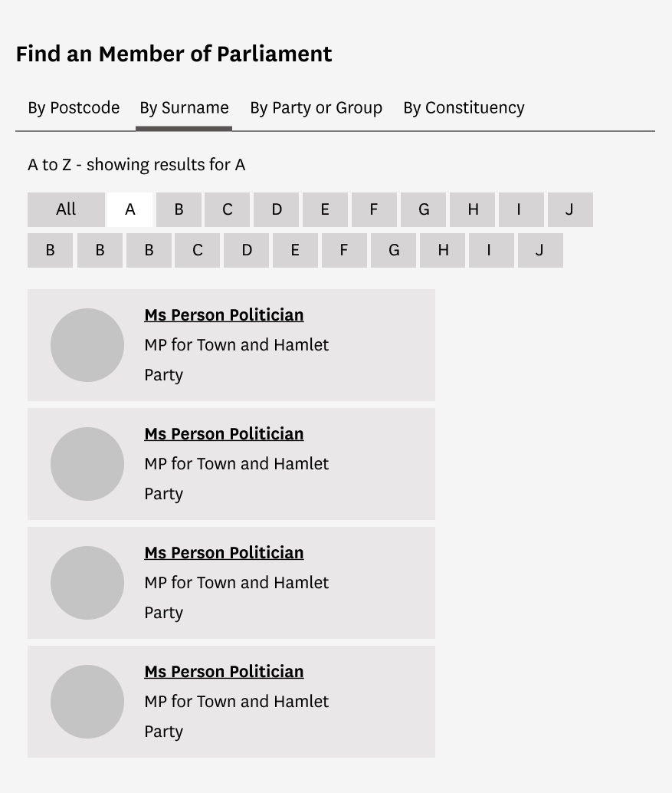 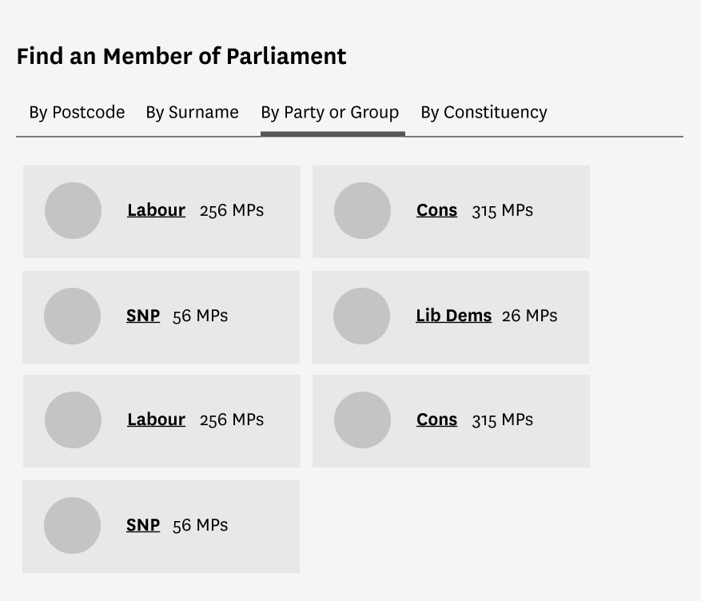 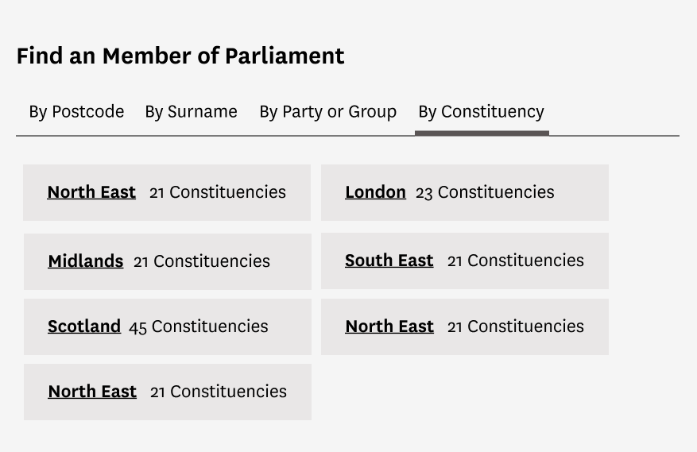 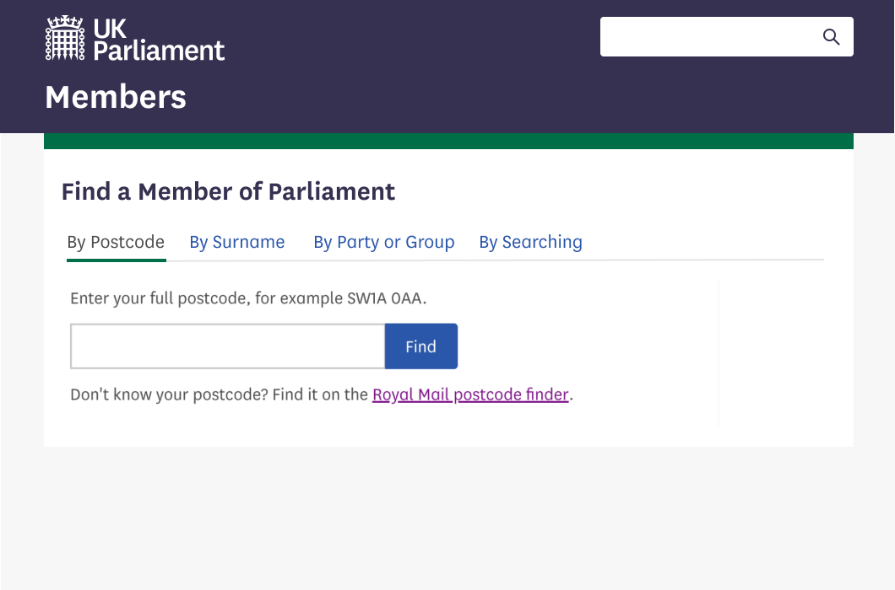Implementation
I created guidance with rationale and so far this pattern has been picked up by a team making Parliament Committees more open as seen below.
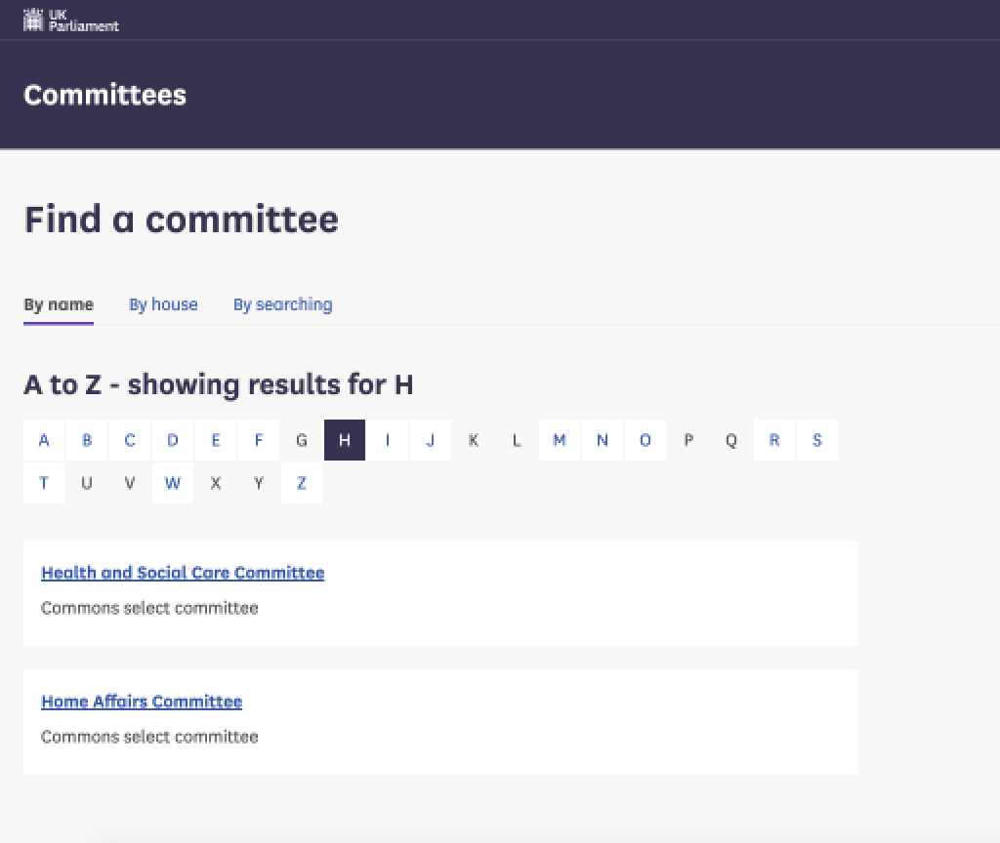Case Study